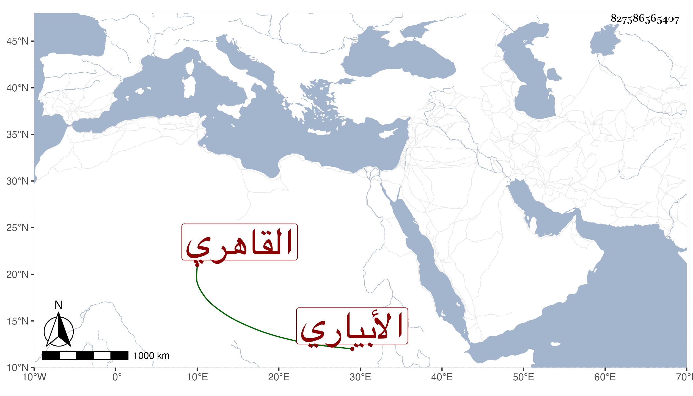

0902Sakhawi.DawLamic.ITO20230111-ara1.EIS1600.827586565407
Biography ID: 827586565407
42
محمد بن أحمد بن علي الشمس الأبياري ثم القاهري ويعرف بابن السدار وهي شهرة خاليه علي وعبد الرحمن وكان يقال له أولا ابن أخت ابن السدار ثم خفف . نشأ يتيما فكلفه خاله النور علي وحفظ القرآن وتخرج به في الكتابة والتذهيب وبغيره كالشمس المالكي وربما كتب على ابن الصائغ بل تخرج بخاله الآخر عبد الرحمن وبرع في الكتابة والتجليد مع صناعة التذهيب وما يتعلق بها من الزنجفر واللازورد بل انفرد بمعرفة استخراج عكر العصفر وغير ذلك ورزق تمام القبول في كله فكان صاحب الحظوة فيه حتى سمعت القاضي عز الدين الحنبلي غير مرة يقول لا أعلم الكيمياء الاصنعة ابن السدار ، وتمول واقتنى تحفا كثيرة من الآلات مع سلوك طريق الاستقامة والمحافظة على الجماعات بالا زهر وغيره والمداومة على التلاوة والبر لأقاربه والصدقة وتسبيل الماء في الحمامات وغيرها والإحسان للأيتام بتعمير أدويتهم وإعطائهم الأقلام وشهود المواعيد وزيارة الصالحين ومزيد العصبية مع المنتمين إليه والإضاءة وملاحة الشكل والملبس . مات في جمادى الثانية سنة أربع وثمانين ودفن بالقرب من حوش صوفية البيبرسية عن نيف وسبعين سنة ولم يخلف في مجموعة مثله رحمه الله وأيانا .
